Vinacart (Theme Framework)¶
Required PHP 5.6+
Featured¶
- add more buttons in tinymce editor.
- add relation products base on category
- quick print in invoice page
- modify system hooks in some files.
- custom admin logo.
- HTML Meta Code
- add main_menu with item contain any block
- twig engine for template
- clone layout featured
- advanced theme customizing with flexible theme options
- import & export for theme data only
- built in block with JS library option
- add blocks: viewed_products, offers,main_menu
- product special countdown, viewed products, refine search
- share buttons, facebook meta tags
- suffix URL, rich snippets, google site map
- bulk generate SEO url, redirect 301, URLs alias manager
- repairing tools
- clean checkout page interface
Screenshot¶
Main menu
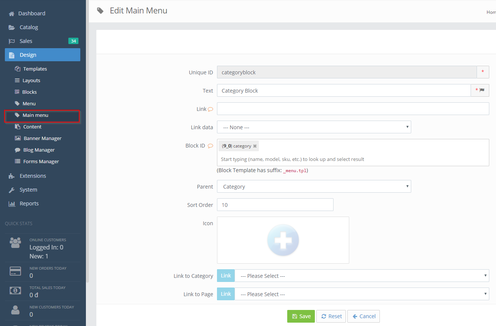Blocks with lib options
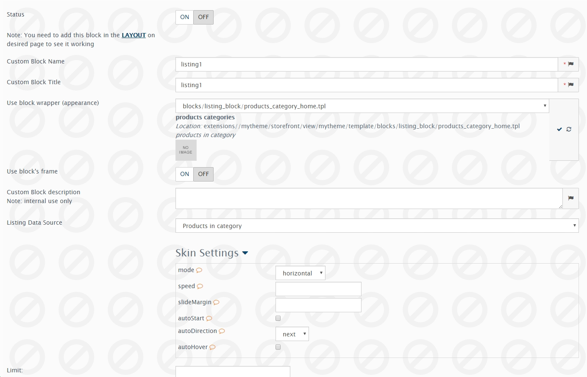Product relation
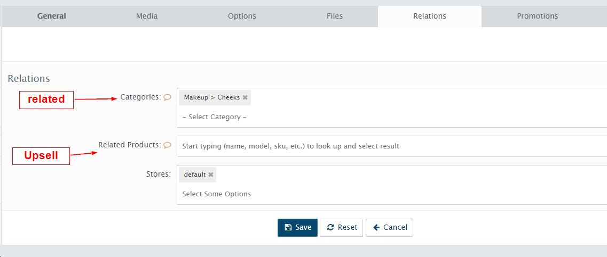Layout clone
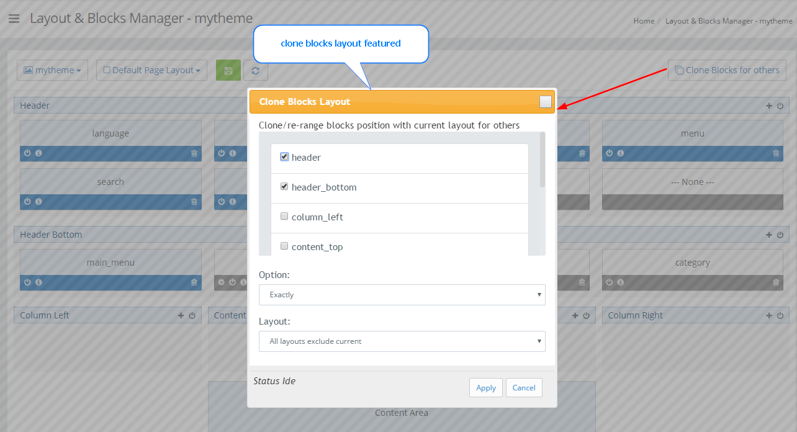Import export theme
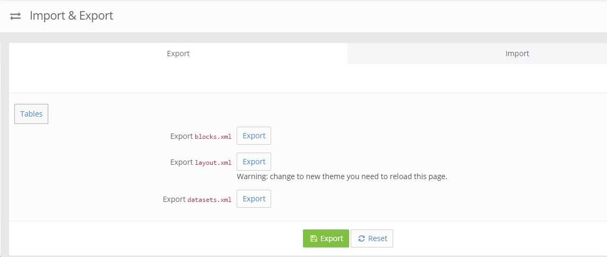Theme Settings
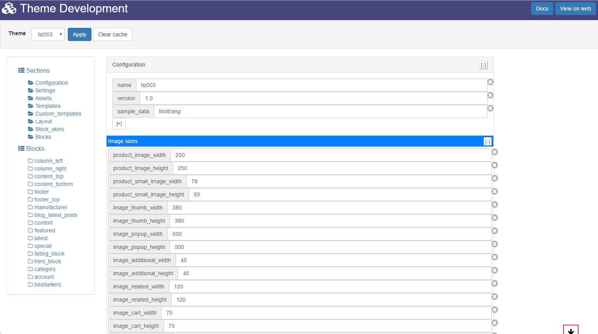Custom checkout pages
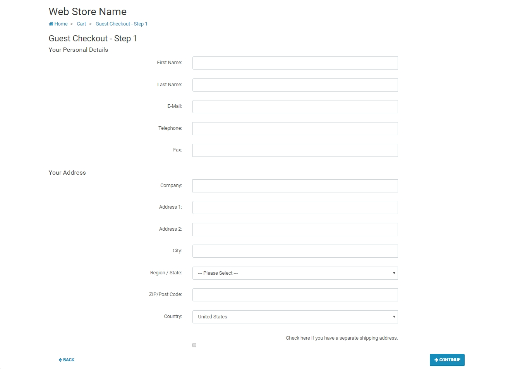 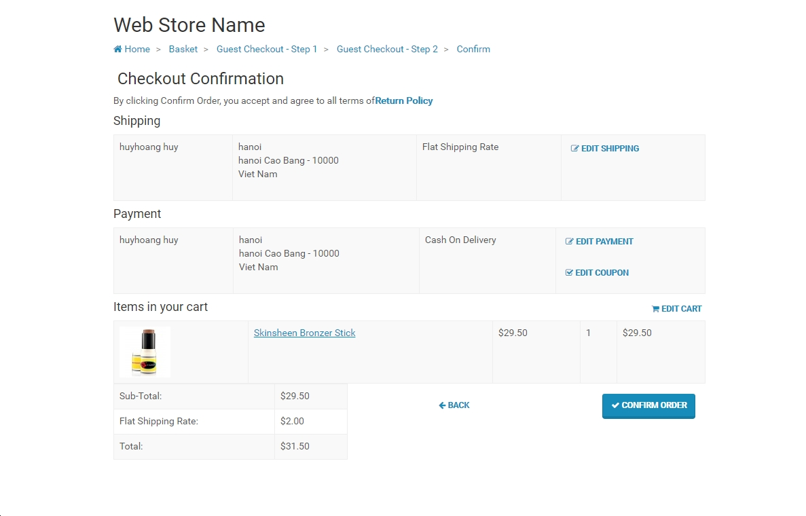 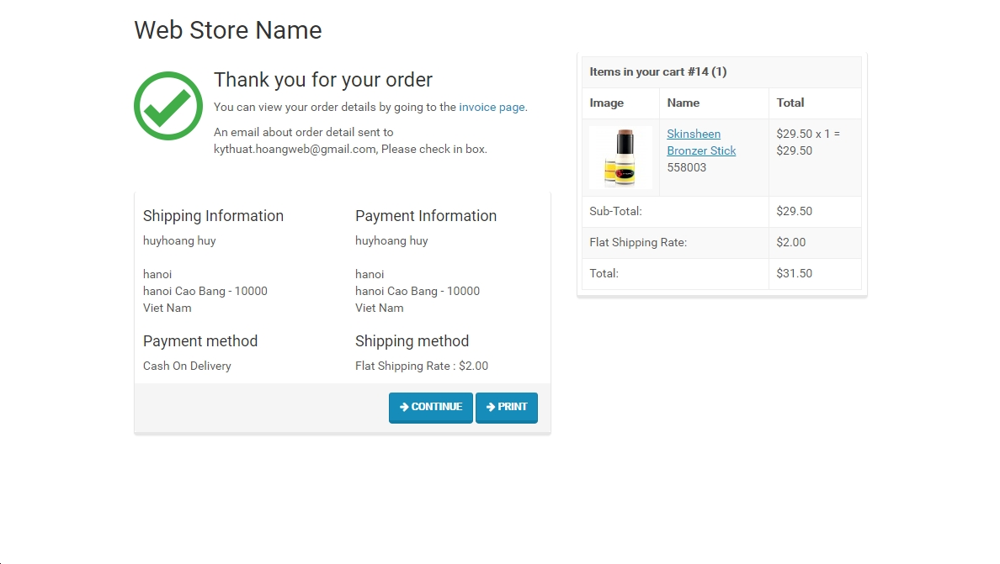Addition settings
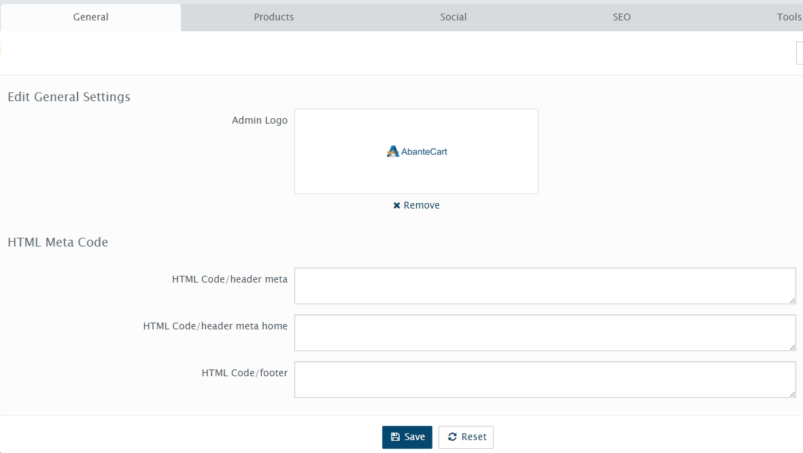 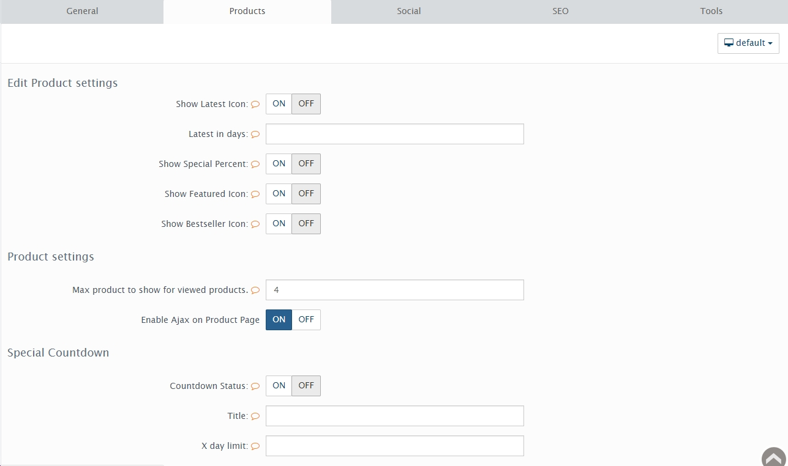 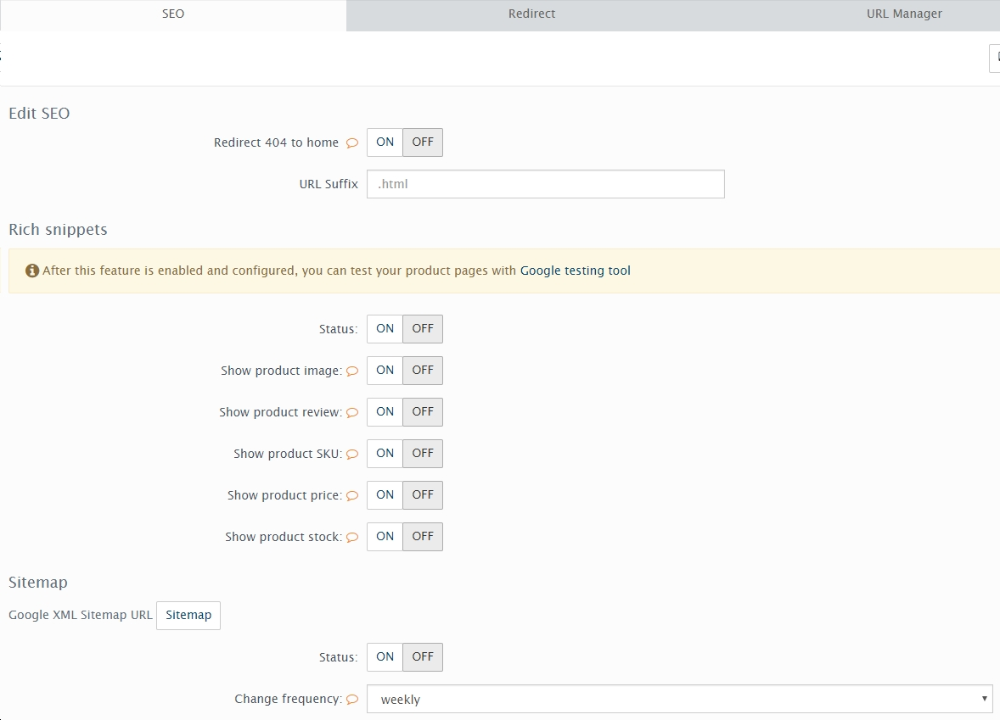 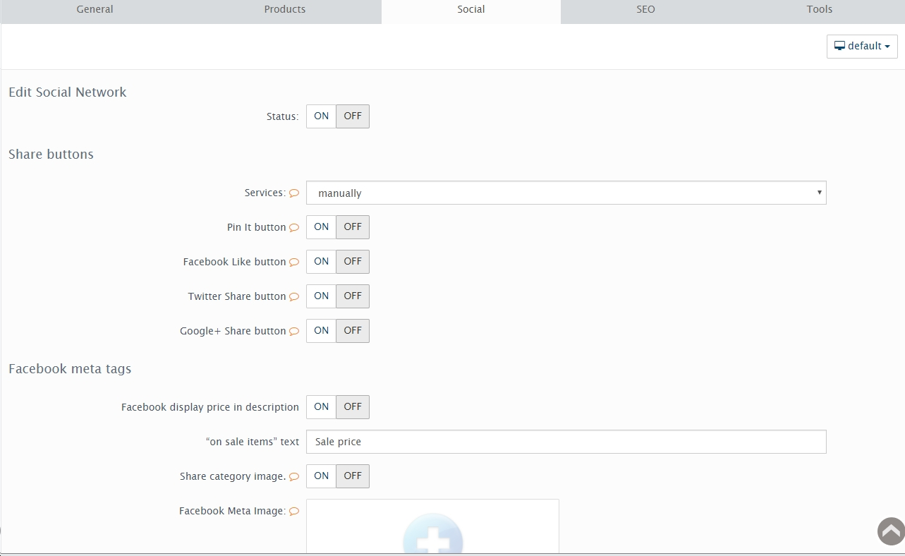